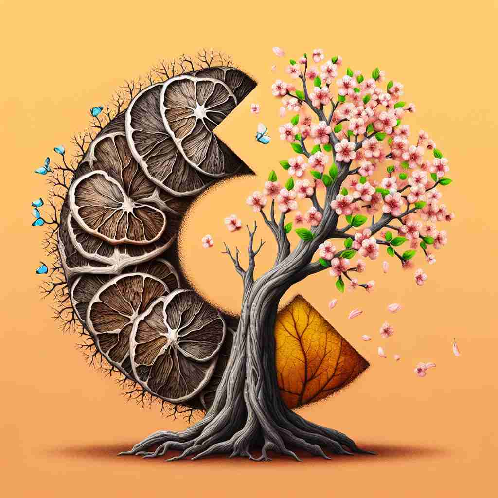

💬 The gardener wants to renew a plant by giving it water and sunlight.

💬 In spring, we will renew the flowers in the garden.
🔈 [rɪ'njuː]
🗝️ v. to make something new, fresh, or strong again
🖼️ 在一个宁静的公园里，一位园艺师正在为花坛添加新的肥料和水。他精心地修剪植物，修复枯萎的枝叶。经过他的悉心照料，花儿重新焕发活力和色彩，完美诠释了‘renew’作为使某物焕然一新的含义。
🔍 想象'renew'是给予某物新的生命。无论是协议、关系、物品还是精神状态，'renew'都是让它们重新焕发活力，回到全新的状态。这个'使之新'的核心概念贯穿了'renew'的各种用法，有助于更好地理解和记忆这个词的多重含义。
💬 The gardener wants to renew a plant by giving it water and sunlight.
💬 In spring, we will renew the flowers in the garden.
🌳 由前缀 're-'（再次、重新）和词根 'new'（新）组成，表示'重新开始或更新'的意思。
💡 记忆 'renew' 时，可以联想为 '重新变新'。通过将 're-' 和 'new' 的含义组合，记忆单词表示使某事物再次变新的意思。
🗝️ v. to extend the period of time when an agreement is valid
🖼️ 在一个阳光明媚的办公室里，一对夫妇正坐在租赁中介的办公桌前。中介微笑着递给他们一份文件，说道：“如果您想续租这套公寓，请在这里签字。”他们兴奋地交换了一下眼神，确认了'renew'作为延长协议有效期的含义。
💬 Don't forget to renew your driver's license before it expires.
❓ 使协议重新生效，就像使其'新'起来
🗝️ v. to start something again after a pause or interruption
🖼️ 在一个充满活力的健身房中，一群人正在热身准备重新开始一场暂停过的瑜伽课。教练微笑地环顾四周，说道：“让我们从上次停止的地方继续。”这展示了‘renew’作为在中断之后重新开始的含义。
💬 The two countries renewed diplomatic relations after years of tension.
❓ 重新开始某事，使其恢复到'新'的状态
🗝️ v. to replace something that has been used up
🖼️ 在一个忙碌的厨房里，厨师注意到香料罐已经空了。他从货架上拿下新鲜的香料，添加到熬制的汤锅中，确保味道依旧。这个场景展现了‘renew’作为替换用光之物的含义。
💬 It's time to renew the supplies in our first-aid kit.
❓ 更换已用完的东西，相当于使其'新'起来
🗝️ v. to give fresh life or strength to
🖼️ 在一个舒适的客厅里，朋友们围坐在一起。其中一人提议：“最近我们都有些疲倦，不如下周末去次短途旅行，充个电？”大家纷纷点头，‘renew’在这里意指恢复或注入新活力。
💬 The spring rain renewed the parched garden.
❓ 赋予新的生命力或力量，使其'重新焕发活力'